始める
画面は実験者が用意する。「開始」が出たら、マウスで押す。
- 画面に「開始」が出るまで待つ。
- 「開始」を押す。評価の画面になる。
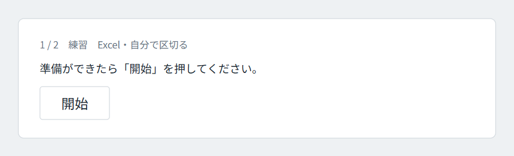
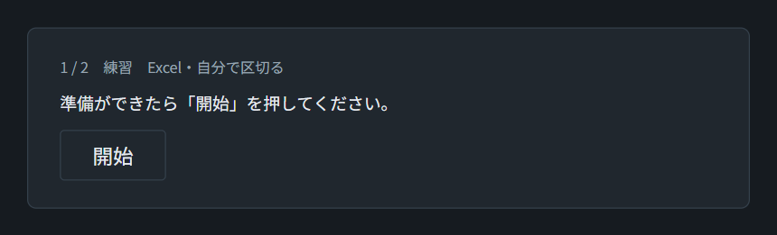
ブラウザのタブやウィンドウを閉じない。困ったときは操作を止めて、手をあげて実験者を呼ぶ。
画面の見方
使うのは、上のボタン、右の操作の欄、表、いちばん下のグラフの 4 つである。
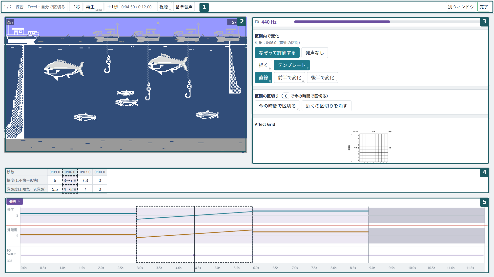
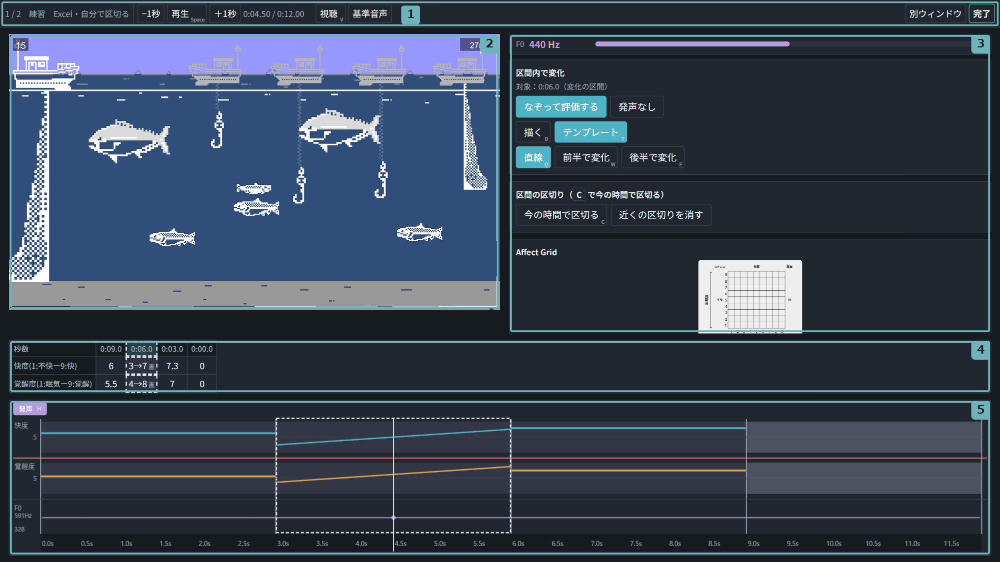
| 場所 | 使うもの・見るもの |
|---|---|
| 上のボタン | 「再生」（もう一度押すと止まる）、「−1秒」「＋1秒」、「視聴」（止まらずに通しで聴く）、「基準音声」（基準の「あ」を聴き直す）、右上の「完了」 |
| 右の操作の欄 | 「なぞって評価する」、「今の時間で区切る」、「近くの区切りを消す」、感情と数の対応を示す図 |
| 表 | 上の行が快度、下の行が覚醒度。列が区間で、左から時間の順に並ぶ |
| いちばん下のグラフ | 入れた値が線で出る。下端の目盛りの帯を押すと、その時刻へ移る |
区間を区切る
最初は録画全体が 1 つの区間である。評価の値が変わる所で止めて、「今の時間で区切る」を押す。
- 先に録画を通しで聴きたいときは、上の「視聴」を押す。最後まで止まらずに再生する。聴き終えたら、もう一度「視聴」を押して評価に戻る。
- 上の「再生」を押す。
- 評価の値が変わる所で、もう一度「再生」を押して止める。
- 止めた位置がずれていたら、「−1秒」「＋1秒」で合わせる。
- 右の欄の「今の時間で区切る」を押す。表の列が 1 つ増える。
- 録画の終わりまで、2〜5 を繰り返す。
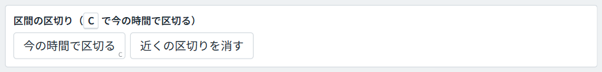
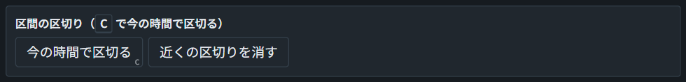
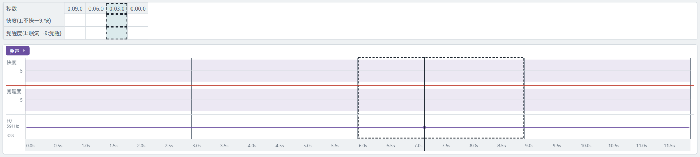
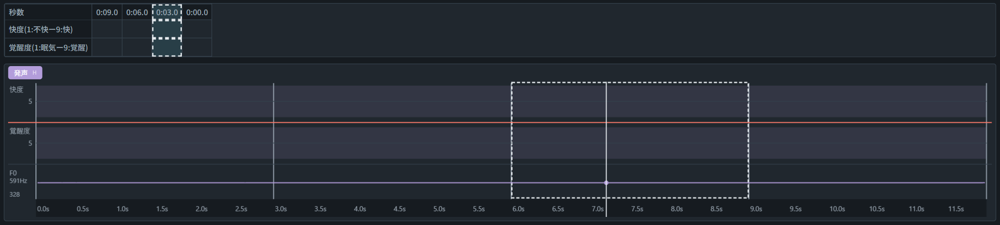
区切りを間違えたら、その近くで止めて「近くの区切りを消す」を押す。いちばん近い区切りが消える。
録画は何度でも巻き戻して構わない。戻すときは「−1秒」を押すか、グラフの下端の目盛りの帯で戻りたい時刻を押す。
グラフの上で区切る・直す
区切りは、いちばん下のグラフを右クリックしても入れられる。ボタンで区切った後に位置を直すときにも使う。
| マウスの操作 | はたらき |
|---|---|
| 区切りの無い所を右クリック | 押した時刻に区切りを入れる |
| 区切りの縦線を右ドラッグ | 区切りを動かす。縦線の上ではマウスの矢印が左右の矢印に変わる |
| 区切りの縦線を右クリック | その区切りを消す |
グラフを拡大して位置を合わせる
短い区間を区切るときは、グラフの時間軸を拡大すると位置を合わせやすい。
- マウスをグラフの上の、拡大したい時刻に置く。
- Ctrl キーを押しながら、マウスのホイールを奥へ回す。マウスを置いた時刻を中心に拡大する。手前へ回すと縮小する。
- 拡大している間は、Shift キーを押しながらホイールを回すと、グラフを左右に送れる。
ホイールだけを回しても、グラフは変わらない。Mac では Ctrl キーの代わりに ⌘（Command）キーを押す。
値を入れる
表のセルをクリックし、1〜9 の数を打って Enter を押す。
- 入れたい区間のセルをクリックする。上の行が快度、下の行が覚醒度である。
- 数を打つ。5.3 のような小数も使える。
- Enter を押す。値が決まり、グラフに線が出る。
- すべての区間の、快度と覚醒度の両方に入れる。
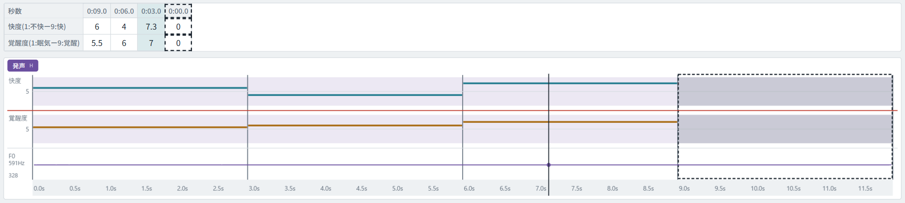
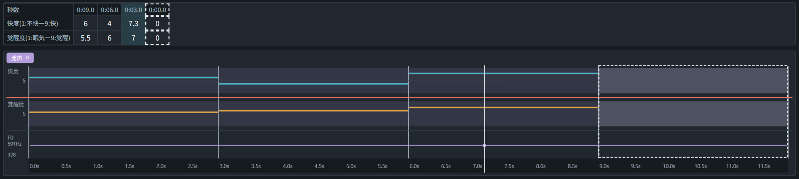
- どの感情がどの数に当たるかは、右の欄の図を見る。
- 発声の無いところは、評価の代わりに 0 を入れてもよい。
- 区間が多くて表が横にはみ出したときは、表の上でマウスのホイールを回すと、表が左右に動く。
- 2 つの値で迷ったときは、間の値（4 と 6 で迷ったときの 5）にせず、どちらか 1 つに決める。
区間の中の変化をなぞって入れる
ふつうは 3 と 4 の入れ方で足りる。1 つの区間の中で評価の値が激しく変わるときだけ、グラフをなぞって変化を入れる。
- 変化を入れたい区間のセルをクリックする。
- 右の欄の「なぞって評価する」を押す。その区間に点線の枠が出る。
- いちばん下のグラフで、快度と覚醒度のうち変化を入れたい方の欄を、枠の中で左から右へなぞる。なぞった線がそのまま値の動きになる。
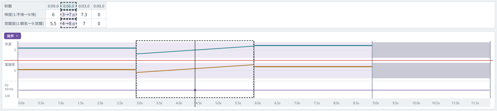
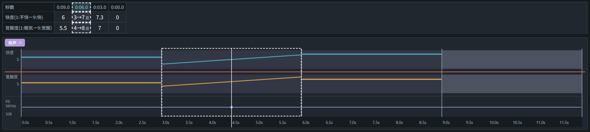
変化を入れた区間のセルには数を打てない。普通のセルに戻すときは、もう一度「なぞって評価する」を押す。
見直して完了する
空欄が残っていないかを確かめてから、右上の「完了」を押す。完了した後は値を変えられない。
- 表に空欄のセルが残っていないかを確かめる。
- 上の「視聴」を押す。入れた値の線を見ながら、最初から止まらずに再生する。視聴の間は値を変えられない。
- 直したい所があれば、もう一度「視聴」を押して評価に戻り、直す。
- 右上の「完了」を押す。確認が出るので「OK」を押す。
- 手をあげて、実験者に知らせる。
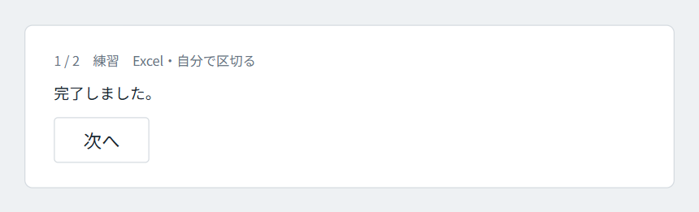
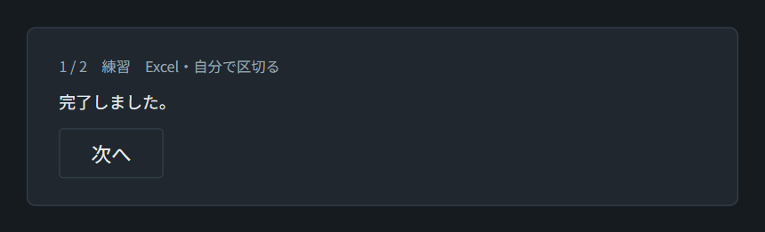
評価は自動で保存される。ファイルを保存する操作は要らない。
慣れた人向けのキー
次の操作は、キーでもできる。キーを使わなくても評価はできる。
| キー | はたらき |
|---|---|
| Space | 再生・停止 |
| C | 今の時間で区切る |
| V | 視聴の開始・終了 |
| Ctrl+Z ／ Ctrl+Y | 取り消し ／ やり直し |
| Shift+← → | 0.1 秒戻る・進む |
| ← → | 前の区間・次の区間の始めへ移る（セルに入力中はセルの移動） |
ほかの操作は、評価ツールの使い方（evaluator-manual.html）にある。